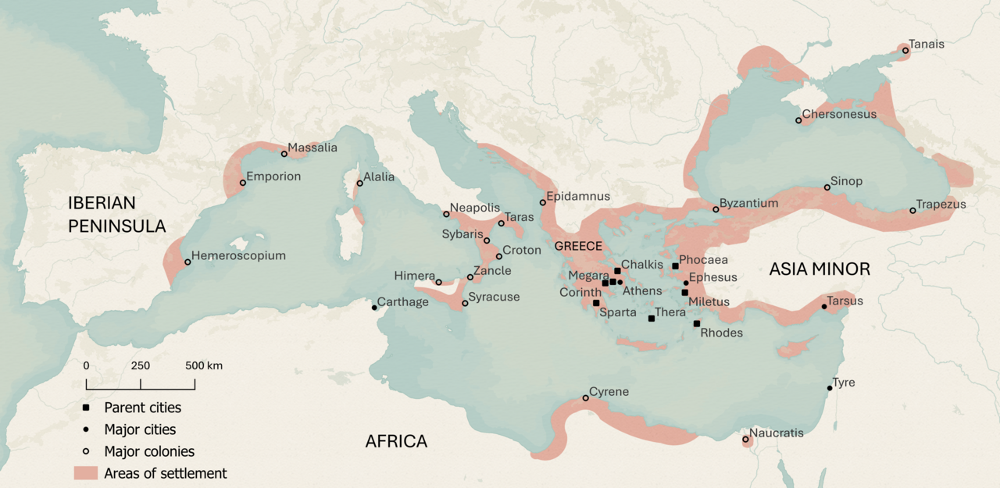

Tema 1 · Del mito a la filosofía
§01 · La cosmovisión mítica
Antes de que existiera la filosofía, la humanidad ya se hacía las grandes preguntas: qué es el mundo, de dónde venimos, cómo debemos vivir. Durante milenios las respondió con mitos. Conviene empezar por ahí, porque la filosofía no nació de la nada: nació discutiendo con el mito.
En la calle usamos «mito» con dos sentidos casi opuestos. A veces señala algo extraordinario —«Maradona es un futbolista mítico»— y a veces, sin más, una mentira —«es un mito que no puedas bañarte hasta una hora después de comer»—. Ninguno nos sirve aquí. Para la historia de la filosofía, un mito es una narración de origen desconocido, cargada de símbolos, que cuenta cómo han llegado a ser como son el mundo y los seres humanos. No es un cuento ni una fábula: es una historia sagrada, y por eso pesa tanto en quienes la cuentan.
Cómo reconocer un mito. El folclorista Lauri Honko (1932-2002) propuso cuatro rasgos1. Por su forma, es un relato que puede contarse y representarse. Por su contenido, trata de seres sobrenaturales y de acontecimientos sagrados. Por su función, explica el mundo —la naturaleza, los hombres, las instituciones— y, a la vez, ofrece un modelo de comportamiento: dice cómo hay que actuar y por qué. Y por su contexto, va unido a los ritos: el mito no es un pasatiempo, sino parte de la vida religiosa de una comunidad. De los cuatro rasgos, el de la función es el que más nos importa: el mito no adorna el mundo, lo explica y, de paso, ordena la conducta.
Aquí está la clave. Un pueblo que vive en sus mitos no tiene «unas cuantas leyendas»: tiene una cosmovisión, una imagen entera del mundo y de su lugar en él. Mircea Eliade (1907-1986) lo expresó bien: conocer un mito es conocer el origen secreto de las cosas, y ese saber no se aprende de memoria, se vive en el rito2. Para Eliade el mito narra siempre un tiempo de los orígenes, aquel en que los seres sobrenaturales hicieron que el mundo fuera como es; al repetir el rito, la comunidad regresa a ese tiempo fundador y lo revive. Por eso los mitos de cada sociedad hablan de aquello que a esa sociedad le va la vida: los pueblos cazadores cuentan mitos sobre los animales que cazan; los agrícolas, sobre las cosechas; en Japón, los terremotos se explican por Namazu, el gran siluro que se agita en las profundidades.
El caso griego. No fueron una excepción. Antes de los filósofos, la imagen griega del mundo era la que cantaban los poetas. En la Teogonía de Hesíodo el universo no se «fabrica»: se engendra. Primero está el Caos; luego surge Gea, la Tierra, que engendra a Urano, el Cielo; y de la unión de ambos nacen, generación tras generación, los dioses y las fuerzas que pueblan el cosmos. Homero, por su parte, había llenado ese mundo de dioses que intervienen en la guerra y en la casa de los hombres. La religión regía la vida de la polis, y esa genealogía divina ofrecía una explicación completa y ordenada de por qué el mundo es como es. Eso es una cosmovisión: no un relato suelto, sino un mapa entero de la realidad.
Nosotros, herederos de la ciencia, tendemos a preguntar si un mito es verdadero o falso. Es la pregunta equivocada. Miramos el mundo con categorías dicotómicas —real o irreal, natural o sobrenatural, cierto o falso—, pero para muchas culturas la experiencia cotidiana, los sueños y el relato sagrado forman una sola realidad. El mito no compite con la ciencia en el terreno de los hechos comprobables: ofrece una perspectiva desde la que el mundo cobra sentido. Por eso puede ser «cierto» para quien lo vive aunque no se pueda verificar.
¿Significa eso que el mito es pensamiento «primitivo», una ciencia que todavía no ha aprendido a razonar? Desconfía de esa idea. Ernst Cassirer (1874-1945) sostuvo que el pensamiento mítico, como el científico, busca relaciones entre causas y efectos, solo que lo hace de forma simbólica. Claude Lévi-Strauss (1908-2009) fue más lejos: no hay una diferencia de fondo entre la mente que crea mitos y la que hace ciencia, porque ambas razonan sobre el mundo; el mito tiene su propia lógica interna. No es, pues, un conocimiento defectuoso, sino otra dimensión del pensamiento.
¿Por qué empezar por el mito? En una historia de la filosofía, detenerse tanto en los mitos pide justificarse. Hay dos razones. La primera: el pensamiento mítico no es un capítulo cerrado de la prehistoria. Ha modelado durante milenios nuestra manera de entender el mundo, y ni la filosofía ni la ciencia lo han borrado; se han levantado encima de él. El sustrato sigue ahí3. La segunda razón es histórica: cuando la filosofía surgió en Grecia, lo hizo frente al mito. Para afirmarse, la nueva forma de pensar tuvo que marcar la diferencia y proclamar que venía a sustituir a la antigua.
Un matiz al relato heroico. La religiosidad oficial que acabamos de describir fue perdiendo fuerza, y en esa grieta —en la necesidad de explicar las cosas de otro modo— se abrió paso la filosofía. No fue un corte limpio: ya en los siglos VI y V a. e. c. algunos griegos dudaban de los viejos relatos, y varios de los primeros filósofos siguieron sirviéndose de imágenes míticas para exponer sus ideas. El paso del mito al logos —del relato sagrado a la explicación racional— fue más un lento amanecer que un trueno. A ese amanecer, y a quienes lo protagonizaron, dedicamos las páginas que siguen.
§02 · El surgimiento de la filosofía en Grecia
¿Dónde y cuándo empezó todo esto? No en Atenas, como quizá supondrías, sino en la otra orilla del mar Egeo: en Mileto, una próspera ciudad de Jonia, en la costa de la actual Turquía, hacia el siglo VI a. e. c. Y no en el corazón de Grecia, sino en sus colonias, los enclaves comerciales que los griegos habían sembrado por todo el Mediterráneo. La pregunta salta sola: ¿por qué allí, y por qué entonces? ¿Por qué no en Egipto, Babilonia o China, civilizaciones mucho más antiguas y poderosas? También ellas se hacían las grandes preguntas, pero la respuesta que llamamos filosofía solo cuajó aquí4.

Desconfía de una respuesta muy repetida: la del «milagro griego», como si en aquella costa hubiera brotado de golpe, por puro genio de un pueblo, algo sin causas. No hubo milagro. Hubo unas condiciones que, al coincidir, hicieron posible una forma nueva de pensar. Verlas merece la pena, porque nos dicen qué tiene la filosofía de particular.
La condición política. La vida griega se organizaba en polis, ciudades-estado pequeñas en las que un cuerpo de ciudadanos libres decidía en común los asuntos públicos. A diferencia de Egipto o de Babilonia, Grecia no tenía una casta sacerdotal poderosa ni un libro sagrado que guardara, intocable, la verdad sobre el mundo. Eso cambia las reglas del juego: cuando ninguna autoridad monopoliza las respuestas, las explicaciones quedan expuestas a la discusión pública. En la plaza y en la asamblea, una afirmación no se impone porque la diga un sacerdote; se sostiene con razones y se rebate con razones. Esa costumbre de argumentar y de pedir cuentas a las ideas es el suelo del que crece la filosofía.
El comercio y el trato con otros pueblos. Las colonias jonias eran puertos cruzados por mercaderes, viajeros y relatos de medio mundo. Quien trata a diario con egipcios, fenicios y persas descubre pronto que cada pueblo cuenta sus propios mitos sobre el origen del mundo, y todos con la misma convicción. Ese descubrimiento relativiza: si hay muchas versiones sagradas e incompatibles, ninguna puede darse ya por evidente, y se abre la pregunta por cuál —si alguna— es la verdadera.
Las herramientas de la abstracción. Hubo además unos instrumentos sin los cuales el pensamiento filosófico no habría tenido con qué trabajar. La escritura alfabética, que los griegos tomaron de los fenicios, permitió fijar cualquier idea en unos pocos signos y transmitirla con fidelidad; y una idea escrita es una idea que se puede releer, comparar con otra y refutar con calma, algo casi imposible cuando todo vive en la memoria. El dinero acuñado acostumbró a la mente a una abstracción notable: reducir cosas dispares —una gallina, un par de zapatos, una jornada de trabajo— a una misma medida de valor. Y las matemáticas y la astronomía, heredadas en parte de babilonios y egipcios, los griegos las transformaron: de recetas prácticas para medir campos o predecir crecidas hicieron un saber general y demostrable, que no dice solo «esto funciona», sino «esto es así, y esta es la razón».
La idea de cosmos. Todas estas condiciones convergen en un único paso decisivo, el que de verdad inaugura la filosofía. Cosmos significa «orden». Frente al mundo gobernado por la voluntad caprichosa de los dioses, los primeros pensadores conciben la realidad como un todo ordenado, regido por una necesidad propia e impersonal. Y si el mundo posee su propio orden interno —su physis, su naturaleza—, entonces puede explicarse desde dentro, por sus causas naturales, sin recurrir a los dioses. Aquí está el giro del mito al logos del que hablábamos: no se trata solo de cambiar de relato, sino de cambiar de tipo de explicación. El logos es la razón que busca causas naturales, las formula con generalidad y las ofrece como afirmaciones discutibles, abiertas a la crítica y a la mejora.
Por eso a estos primeros filósofos se los llamó physiologoi, «los que dan razón de la naturaleza»: los que buscan el logos de la physis. La palabra filosofía —philo-sophía, «amor a la sabiduría»— es algo posterior; la tradición la atribuye a Pitágoras, que habría rehusado llamarse «sabio» para llamarse solo «amigo del saber». El nombre importa menos que la actitud que nombra: la de quien no se conforma con la respuesta heredada y la pone a prueba.
Fíjate en una consecuencia fácil de pasar por alto. Cuando un pensador propone que el origen de todo es el agua y otro le replica que es el aire, no están repitiendo un dogma: están discrepando, y cada uno ofrece sus razones. Ese desacuerdo argumentado, esa disposición a corregir incluso al maestro, es justamente lo que el mito no permitía. La filosofía no nace con una respuesta, sino con un modo de buscarla.
¿Y cuál fue la primera pregunta que se hicieron? Una sola, y enorme: ¿de qué está hecha, en el fondo, la realidad? ¿Hay, bajo la apariencia cambiante de las cosas, algo permanente que las explique? A esa pregunta —el problema de la realidad— dedicaron su esfuerzo los pensadores que la tradición reúne bajo el nombre de presocráticos, y de ellos nos ocupamos a continuación.
§03 · El problema de la realidad en los presocráticos
Llamamos presocráticos a los filósofos griegos anteriores a Sócrates, aunque algunos fueran contemporáneos suyos. Lo que los une no es una doctrina común, sino una pregunta común, la que acabamos de enunciar: ¿qué es la realidad por debajo de sus apariencias? Casi todos la abordaron buscando el arkhé: el principio del que todo procede y que, permaneciendo, explica la variedad y el cambio de cuanto existe. Fíjate bien en esa palabra, porque la usaremos mucho: el arkhé es a la vez origen —aquello de lo que las cosas surgen— y fundamento —aquello que, por debajo, las sostiene—.
Tales de Mileto (h. 624-h. 546 a. e. c.). La tradición lo tiene por el primer filósofo, y conviene detenerse en él, porque fija el molde con el que pensaremos a todos los demás filósofos de la naturaleza. No fue solo un pensador: se le recuerda como uno de los Siete Sabios de Grecia, predijo —según la leyenda— un eclipse de sol, midió la altura de las pirámides por su sombra y dejó su nombre a un teorema de geometría. Se cuenta de él que, absorto en mirar el cielo, cayó en un pozo, y una sirvienta se rió de quien quería conocer los astros sin ver lo que tenía a los pies; pero también que, harto de que le reprocharan la inutilidad de la filosofía, previó una buena cosecha de aceitunas, alquiló por adelantado todas las prensas de la comarca y se hizo rico. Las dos anécdotas dibujan ya la figura del filósofo: alguien que mira más lejos, aunque a veces tropiece, y cuyo saber, si quiere, también sirve.
Lo decisivo, sin embargo, es su respuesta a la pregunta por el arkhé: el principio de todo es el agua; de ella procede todo y a ella retorna. Lo que importa no es el acierto —que el agua no sea el origen de cuanto existe—, sino el gesto, y por eso es nuestro modelo: Tales busca un principio, lo busca en la naturaleza y no en los dioses, y lo elige por razones. Aristóteles, que lo tuvo por el fundador de esta clase de filosofía, le atribuye estas: todo lo vivo se nutre de lo húmedo, las semillas son húmedas, hasta el calor procede de la humedad; lo que da y mantiene la vida bien podía ser el principio de todo. Cuando estudiemos a cada físico haremos las tres preguntas que Tales nos enseña a plantear: ¿cuál es su arkhé?, ¿con qué razones lo sostiene?, ¿cómo explica con él que el mundo sea vario y cambiante?
Anaximandro de Mileto (h. 610-h. 546 a. e. c.), discípulo suyo, dio un paso más audaz: el principio no puede ser una sustancia conocida —ni agua ni fuego—, porque ninguna abarcaría a las demás; ha de ser algo indeterminado, el ápeiron, «lo ilimitado», de lo que todo se separa y a lo que todo vuelve. Anaxímenes de Mileto (h. 586-h. 526 a. e. c.) cerró la serie milesia eligiendo el aire, pero aportó algo nuevo y valioso: un mecanismo. El aire se condensa y se enrarece, y al hacerlo se vuelve viento, agua, tierra o fuego. Por primera vez no solo se dice qué es el principio, sino cómo genera la diversidad de las cosas.
Pitágoras de Samos (h. 570-h. 495 a. e. c.) y sus seguidores dieron a la pregunta una respuesta de otro orden: el arkhé no es una materia, sino una forma. Lo que de verdad explica el mundo es el número y la proporción —lo que hace que una cuerda suene armónica o que los astros guarden sus órbitas—. La realidad, para ellos, está escrita en lenguaje matemático: una intuición que recorrerá toda la historia de la ciencia.

Bajo estas respuestas latía un problema más hondo, que dos pensadores llevaron al extremo y enfrentaron: el cambio. Heráclito de Éfeso (h. 540-h. 480 a. e. c.) lo abrazó sin reservas: nada permanece, todo deviene. Su pensamiento se suele resumir en dos palabras —«todo fluye», pánta rhei— y en una imagen famosa: no puedes bañarte dos veces en el mismo río, porque ni el río ni tú seguís siendo los mismos. Si todo está en perpetuo movimiento, ¿queda algún orden? Sí: Heráclito lo llama logos, la ley o medida oculta que gobierna el incesante combate de los contrarios —día y noche, guerra y paz— y mantiene en pie el equilibrio del conjunto. Su símbolo de lo real es el fuego, que solo es mientras arde y cambia.
Parménides de Elea (h. 515-h. 450 a. e. c.) le replicó, y su réplica fue demoledora. No se fía de los sentidos, que nos muestran un mundo cambiante; se fía solo de la razón. Y la razón, dice, impone una verdad inapelable: «el ser es y el no-ser no es». De ahí deduce que lo real —el ser— ha de ser uno, eterno, indivisible e inmutable: no puede surgir de la nada, ni perecer, ni cambiar, porque cambiar sería dejar de ser lo que se es para pasar a ser lo que no se es. El movimiento y la pluralidad que percibimos serían, entonces, una ilusión de los sentidos. Con Parménides nace algo que llega hasta hoy: la ontología, la pregunta por el ser, y el razonamiento riguroso que sigue sus conclusiones aunque choquen con la experiencia.
Aquí la filosofía se dio contra un muro. La razón de Parménides parecía impecable, pero negaba lo más evidente: que el mundo se mueve y se transforma. ¿Cómo salvar a la vez la lógica y la experiencia? Los últimos presocráticos lo intentaron aceptando la regla de Parménides —de la nada, nada surge; el ser ni se crea ni se destruye— pero rescatando el cambio.
Empédocles de Acragas (h. 495-h. 435 a. e. c.) propuso cuatro raíces eternas —tierra, agua, aire y fuego— que dos fuerzas, el Amor y el Odio, mezclan y separan: nada nace ni muere, solo se combina y se disgrega. Anaxágoras de Clazómenas (h. 500-h. 428 a. e. c.) multiplicó esas raíces en infinitas semillas y añadió un principio ordenador, el Nous o Inteligencia, que pone orden en la mezcla.
Leucipo y Demócrito de Abdera (h. 460-h. 370 a. e. c.) dieron el paso final, y el más influyente. Su solución es de una elegancia radical: lo real son los átomos —partículas llenas, indivisibles, eternas e iguales en naturaleza, que solo difieren en forma, tamaño y posición— moviéndose en el vacío. Cada átomo es, a su modo, el «ser» inmutable de Parménides; pero, al haber muchos y poder desplazarse en el vacío, su combinarse y separarse produce todo cuanto vemos nacer y morir. No hacen falta ni un fin ni una mente: solo átomos y vacío. Es la primera explicación plenamente materialista y mecanicista de la realidad, y resuena todavía en la física moderna.
Estos pensadores fijaron la mirada en la naturaleza, en el cosmos. Pronto, sin embargo, una nueva generación girará la pregunta ciento ochenta grados: dejará por un tiempo el problema del mundo para interrogarse por el ser humano y por la polis. A ese giro —el de los sofistas y Sócrates— dedicamos el tema siguiente.
Honko, L. (1984). The problem of defining myth. En A. Dundes (Ed.), Sacred narrative: Readings in the theory of myth (pp. 41–52). University of California Press. (Obra original publicada en 1972).↩︎
Eliade, M. (1985). Mito y realidad (esp. p. 25). Labor. (Obra original publicada en 1963).↩︎
Nuestra especie necesita dar sentido a todo y tolera mal lo desconocido: ante el trueno, la enfermedad o la muerte queremos saber el cómo y el porqué. El mito fue, durante casi toda la historia del Homo sapiens, la herramienta para responder a esas preguntas de fondo.↩︎
En la India y en China hubo, por supuesto, un pensamiento hondo y sistemático sobre las grandes cuestiones. Lo que seguimos en este libro es la filosofía occidental: la tradición concreta que arranca en Grecia y desemboca en nuestra propia manera de pensar. Decir que «nació» en Grecia no rebaja a las demás; solo delimita de qué historia estamos hablando.↩︎